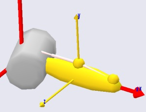
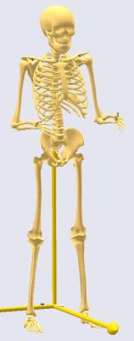

Lesson 1: Segments¶
Caution
Old tutorial: This tutorial has not yet been updated to ver. 7 of the AnyBody Modeling System. Some concepts may have changed.
Segments are defined by the AnySeg keyword in AnyScript. They are the rigid bodies on which the system bases its analysis. In a body model, segments are usually bones, but since an AnyBody model often comprises various equipment and other items, segments are also used to model cranks, pedals, handles, tools, sports equipment, tables, chairs, and all the other environmental objects a body may be connected to.
In fact, An AnyBody model does not have to entail a living body. You can easily create an AnyBody model of a machine in which no biological elements take part.
Segments in AnyBody are basically a set of mass properties as you can see below.

Segments do not have any particular shape associated with them. By default a segment is originated in its Center of Mass (CoM), but it is possible to move the CoM away from the origin of the segment’s reference frame. The mass properties are defined by means of a mass and an inertia tensor. The segments in the picture above visualize their mass properties by ellisoids.
Another important property of a segment is that it can have nodes, so-called AnyRefNodes, assigned to it. The connections between the segment and the AnyRefNodes are rigid, so the nodes move with the segment. The nodes are visualized by the heads of the pins sticking out from the ellipsoids.
A basic definition of a segment could go like this:
AnySeg Potato = {
Mass = 1;
Jii = {0.01, 0.001, 0.01};
AnyDrawSeg drw = {};
};
Notice that the AnyDrawSeg is just an empty pair of braces signifying that we are using the standard settings. This will produce the following image:

The AnyDrawSeg always represents segments as ellipsoids with axis ratios corresponding to the inertia properties. But the AnyDrawSeg class has multiple settings that can be used to control the appearence of the segment:

Please refer to the reference manual for further explanation. The Getting Started with AnyScript tutorial provides examples of segment definitions.
See also
Next lesson: Next up is Lesson 2: Joints.
 Please report it here...
Please report it here...